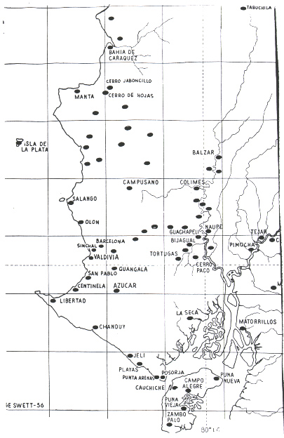
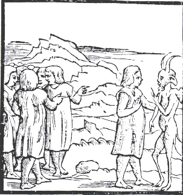

|
Introduction “My name is Jorge, but my “stage name” is Dolores. If you know what I mean.” This response left my psychologist, turned anthropologist, friend completely intrigued. How could a “man,” surrounded by his group of male friends, be so open about his homosexual identity in a country like Ecuador. Especially since at the time of the interview (around 12 years ago), any consenting sexual activity between adult men carried a mandatory 8 year-long prison sentence. This incident occurred very early on in my anthropological training. Not privy to its full meaning at the time, I now return to it to assess the complex issues that this interview response raised. My own sexual questioning and assessment of a cultural setting like that of Latin America, which so fiercely sought to annihilate same-sex desires have been central in being able to return to Jorge/Dolores’ remark. This paper explores the presence and representation of same-sex desire among the enchaquirados of the pre-Columbian communities of southern coastal Ecuador. Its main purpose is to discern the role of homoeroticism in colonial governance and in the traditionally homophobic stance of Latin culture. This discussion looks to enable us to understand how religion and morality were instituted to create the varied manifestations of Latin sexual identities. Ultimately, the analysis will also contribute to assess the complex dynamic and discursive forms of colonial power, striving to go beyond the traditional simplistic binary opposition between colonial oppressors and victims. The Manteños-Huancavilcas and The Enchaquirados The area in which Jorge/Dolores lived, Ecuador’s Peninsula of Santa Elena (see Fig. 1), has experienced a series of cultural transformations, including that of the Spanish colonial conquest. The Manteño-Huancavilca federation, the last group to occupy this area before the Spanish was the product of an alliance conformed by over twenty-five different pre-Columbian Indian communities (Estrada 1957). What little we do know about this federation comes from the Spaniards’ conquest crónicas and from recent archaeological excavations. In what follows I rely mainly on the ethnohistoric accounts since they offer the most information on the religious and sexual practices of these different groups.  figure 1 For the Spanish chroniclers, not surprisingly, the Manteños engaged in barbaric rituals and were in direct communication with the devil himself (see Fig. 3). In Cieza de LeÓn’ s (1971: 193) words: The naturals of these towns were in extreme agoreros and they used great religions; so much so, that in the larger parts of Peru there were not other people like these that sacrificed, which is public and notorious. Their priests looked after the temples and the services of the simulacros or idols that represented the figures of their false gods, in front of which, at their own times and hours, they said some songs and made the ceremonies that they learned from their elders, in the manner and custom that their ancestors had. And the devil, with terrible figure, would let himself be seen by the one that it was established and signaled for that damned office, and they were very revered and feared by all the lineages and community of the Indians in this land.  figure 3 In the following chapter Cieza continues his description in the following manner: And in other parts, as I will continue to narrate in this history, and in this province, they affirm that the lord (senor) of Manta has or had an emerald rock, of enormous grandeur and quite rich, the one which was highly esteemed and venerated by their ancestors, and some days they had it for public exhibition, and they adored and revered it as if in it there was some deity imprisoned. And if a male or female Indian would get sick, after having made their sacrifices they would go to pray to the rock, and they also state that they worshipped other rocks, making one understand that the priest spoke to the devil so that health would come through these offerings; and later the cacique and other ministers of the devil would do this because of lots of different parts of this land the sick would come to the town of Manta to make their sacrifices and to offer their gifts (Cieza de León 1971: 200;). Among the descriptions of these groups’ reprehensible activities were not only that of idolatria (idol worshipping), dealings with the devils, animal and human sacrifices but also quite significantly that of the sin of sodomy. Paramount in this sexual practice was a group of young men recognized for their homosexual activity and their ritual attires of chaquiras (shell beads) and gold ornaments. Fernandez de Oviedo describes the enchaquirados in the following manner: They were sodomites, and they would have the boys very well beaded (enchaquirados) and adorned with sartales with lots of gold jewelry (1959, vol. IV; 221). Very little is known about these young men. However, taking into account their attires of chaquiras and gold we can assume that they were held in some esteemed status within the community, especially since the chaquiras were considered priceless artifacts among these coastal groups. The chaquiras are described in several of the accounts. The following is a description by Fernandez de Oviedo: They had red shells of the ones they have in chaquira id est sartales, like the ones in the Canary Isles that are sold to the King of Portugal for the rescue of Guinea: and for this the Indians give all their gold and silver and clothes that they bring as ransom (1959, vol.IV: 122). What is also telling in many of these descriptions is that the chaquiras were not only highly esteemed but were also considered part of the female attire: The women of these Indians, in the following manner, were adorned and dressed themselves and their husbands in cloth and shirts of cotton, with some of wool. They had on their bodies some type of adornment of gold jewelry and very small beads, which they call red beads (chaquiras coloradas), that was extreme ransom and rich. And in other provinces I have seen that this chaquira was so precious that large quantities of gold was given for them (Cieza de León 1971: 189). In another of Cieza’s description he seems to imply the emotional importance of some of these young men when he describes the traditional indigenous practice of burying the chiefs’ companions with him at the time of his death: ... if he is lord or principal, they put two or three of the most preferred and beautiful of his women, and other of the most precious jewels, and with the food and the pitchers of their maize wine, however much they want. ... This custom of burying their dead with their weapons, their treasure and much maintenance was widely spread in these lands that we have discovered; and in many provinces they would also bury live women and boys (Cieza de León 1971: 204). Other homosexual activities among these groups are described in many of the cronistas that initially visited these coastal groups: But as these people were evil and full of vices, not withstanding that among them there were many women, and some of them extremely beautiful, most of them engaged in (which has been certified to me) publicly and in the open in the sin (pecado nefando) of sodomy, in which it is said that they glorified themselves in extreme. It is true that in the last years Captain Pacheco and Captain Olmos, that now are in Spain, made harsh punishment to the Indians that committed the above mentioned sin, admonishing them by how God was displeased, and they were so beseeched that now very little or none of this sin is practiced, nor any of the other bad customs that they had, nor do they make use of other abuses of their religions ... (Cieza de León 1971: 198). This last account both acknowledges the widespread practice of sodomy among the Manteños and Cieza’s reticence in even mentioning the sexual practice of sodomy itself. In some of the other accounts, such as that of Fray Reginaldo de Lizirraga, the use of homosexual activity to create a sense of “otherness” is particularly explicit. This distance is not only afforded from the Spanish themselves but is also instrumental to separate between the different Indian communities. In this account, (in which Fray Reginaldo de Lizarraga seems to have confused the names of the Indian communities), the description of the acts of sodomy not only have civilizing undertones but also racializing ones: They lived in this city and its districts two nations of Indians, one called Guamcavillcas, well disposed people and white, clean in their dress and good-looking; the other ones are called Chonos, blacks, and not as sociable as the Guamcavillcas; both of them are warring people; their weapons, bow and arrows. The Chonos have bad reputations of engaging in the vice of sodomy (vicio nefando); they have their hair on end and the top of their heads complete bald, which is why the rest of the Indians ridicule them; calling them Chono dogs cocotados, as we will later say (Lizarraga 1968: 66; my bold). There is no mistaking the Spaniard’s negative moral judgment of sodomy among the Manteños-Huancavilcas. In every instance the cronistas envision how divine wrath is set to punish such an unnatural and diabolical act as sodomy: ... they used among themselves the (nefando) sin of sodomy, so horrendous and of grave consequences; which they used and carried out publicly and in the open, without fear of God and very little shame of themselves. And all the Indians (naturales) stated that God our Lord, not being pleased by ignoring such horrible sin, sent them a punishment in accordance with the ugliness of the sin (Cieza de León 1971: 206). Conclusion These are some of the ethnohistorical accounts about the Manteño-Huancavilcas which offer us an opportunity to possibly contextualize Jorge/Dolores’ sexual identity. The homosexual and transgendered identity inherent in his/her response may in this manner be as strongly locally and historically constituted as it is tied up to the global movement for gay rights. The pervasive presence of a transgendered community in the non-urban environment setting of Ecuador’s Peninsula of Santa Elena, I believe, has much to offer us not only in assessing the nature of sexual identities in general, but also about notions of resistance, accommodation, or mere daily existence in the face of capitalist cultural dynamics. However, this some-what triumphant tone of recognition of a possibly local gay identity is only but half of the picture. The other half is afforded by five centuries of religious and moral ideology that has shaped and constituted transgendered identities throughout the continent. It would be interesting to asses in what ways Catholicism has allowed and informed Jorge/Dolores to be who he/she wants to be. That is, to ask how Latin American Catholicism has contributed to the present expression of queer Latin identities. This is particularly complex in light of the Church’s condemnation of homosexual activity, and through its political clout contributing in creating a homophobic secular ideology that has significantly ostracized transgendered communities. To complicate matters further, this homophobic ideology has been even further reified in a racial ideology of white/mestizo control of public policies, national images and political representations. In Ecuador this racialized control has meant the almost complete erasure and outright denial of a different or alternative pre-Columbian sexual practice to that of the one advocated by the Catholic church. However, this binary opposition does not fully explicate the complex involvement and centrality of religion and sex in the construction of contemporary Latin identities. There is no doubt that the Church’s homophobic wishes have not been fulfilled, Jorge/Dolores’ existence is a testament to that. But I am tempted to ask if the annihilation of sodomites was ever the Church’s ultimate objective. Rather, I would suggest that more subtle forms of domination were being instituted at this time, forms in which both pre-Columbian and Spanish religious believes were equally caught. Both the Church and Indian communities could be seen as struggling intersection within greater webs of hegemonic constraints. These hegemonic constraints are still represented today by the “moral debate” over sexuality in Latin America, what Roseberry (1994) and Thompson (1978) refer to as the “field of force” that is inherent in the contemporary constitution of Latin identities. A debate on sexuality that is implicated by a myriad of racial, class and national undertones. It might be possible to turn back to Cieza’s crónica for some insight on the homoerotic voyage “Latin American people” began half a millennia ago: And so, they say, that being all of them involved in their damn sodomy, fire came from the sky, frightful and scary, making great noise, from the center came a shimmering angel, with a grand and blinding sword, with which with a single blow killed all of them and a fire consumed them, and that all that was left was some bones and skulls, which for memory of the punishment God desired that they survive without being totally consumed by the fire (Cieza de Leon 1971: 206). I wonder if perhaps these huesos y calaveras (bones and skulls) may not precisely be the lost struggles and practices which have not been completely destroyed but, merely transformed, by the ravishing fire of our own sexual desires and passions. O. Hugo Benavides MAGNET Postdoctoral Fellow University School and Graduate Center City University of New York Paper delivered at the Latina/o Colonial, Post-Colonial Subjects: Exploring the Body, Religion and Identity, Harvard School of Divinity, Boston, April 1999. REFERENCES CITED Cieza de León, Pedro 1971 La Crónica del Perú, Buenos Aires: Colección Austral. Estrada, Victor Emilio 1957 Los Huancavilcas: Ultimas Civilizaciones Prehistóricas de la Costa del Guayas, Museo Victor Emilio Estrada, No. 3, Guayaquil. Fernandez de Oviedo, Gonzalo 1959 Historia General y Natural de las Indias, 5 vols., Madrid. Lizarraga, fray Reginaldo de 1968 Descripción Breve de Toda la Tierra del Perú, Tucumán, Río de la Plata y Chile, Madrid. Roseberry, William 1994 “Hegemony and the Language of Contention,” In: Everyday Forms of State Formation: Revolution and the Negotiation of Rule in Modern Mexico, Joseph, G. and D. Nugent (eds.), Durham: Duke University Press. Thompson, E. P. 1978 “Eighteenth Century English Society: Class Struggle Without Class?,” Social History 3(2): 133-65. Fig. 1 Map of Manteño-Huancavilca Occupation (Estrada 1957) Fig. 2 (Fig. 2-6, From Cieza de León’s Crónica del Perú) |